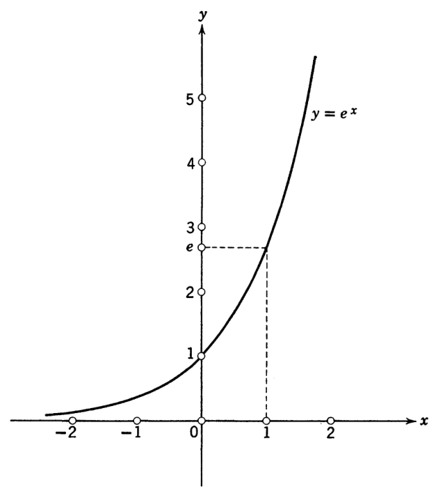

a. 数 e 的对数
在第 79 页，我们由 (1+1/n)n 的极限得到常数 e。它对于函数 logx 有特殊的地位。事实上，数 e 的特征正是等式 loge=1。¹
原注 1（第 149 页） 从几何上说，这意味着双曲线 y=1/x 和直线 y=0, x=1, x=e 所围的面积等于一（见图 2.18）。
为了证明这一点，注意函数 logx 的连续性给出
loge=log[n→∞lim(1+n1)n]=n→∞limlog[(1+n1)n]=n→∞limnlog(1+n1).由积分中值定理，
log(1+n1)=∫11+1/nu1du=ξ1n1,其中 ξ 是 1 与 1+1/n 之间的某个数，依 n 的选取而定。显然 limn→∞ξ=1，所以
loge=n→∞limξ1=1.(24)b. 对数的反函数。指数函数
由 loge=1 可知，对任一有理数 α 都有 log(eα)=αloge=α。所以，每个有理数 α 都是 logx 在某个正数 x 处取得的值。而 logx 连续，故也能取到任意两个有理数之间的一切值，也就是说，能取到一切实数值。因此，x 取遍所有正数时，y=logx 的值取遍所有数 y。又因 logx 单调递增，对每个实数 y，恰有一个正数 x 使 logx=y。方程 y=logx 的解 x 由对数的反函数给出，把它记为 x=E(y)。由此可知，E(y) 对所有 y 都有定义，处处为正，并且也是连续的递增函数（见第 45 页及图 2.20）。

图 2.20 指数函数
y=logx 和 x=E(y) 表示 x 与 y 之间的同一个关系，所以对有理数 α 成立的方程 α=log(eα) 也可以写成 E(α)=eα。可见，对于有理数 α，E(α) 的值就是数 e 的 α 次幂。若 α=m/n 为有理数，可直接把幂 eα 定义为 nem。若 α 是无理数，最自然的定义是把 α 表示成一列有理数 αn 的极限，并置 eα=limn→∞eαn。由于 eαn=E(αn) 且 E(y) 连续地依赖于 y，我们能够确信 eαn 确有极限，其值等于 E(α)，与逼近 α 所用的具体数列无关。这就证明 E(α)=eα 对无理数 α 也成立。现在，对于所有实数 α，都可以用 eα 代替 E(α)。称 ex 为指数函数。它对一切 x 有定义，连续、递增且处处为正。
由于 y=logx 和 x=ey 是同一关系的两种写法，可见这里由积分定义的 x 的“自然对数” logx，就是初等数学里以 e 为底的对数。即 logx 是使 e 的相应次幂等于 x 的指数，亦即
elogx=x.(25)可以写 logx=logex。¹ 同样地，x=ey 是对数等于 y 的那个数，即
logey=y.(26)原注 1（第 151 页） 读者也许会觉得，“自然对数”这个名称留给以 10 为底的对数更合适。但从历史上看，纳皮尔于 1614 年发表的第一张对数表，实质上给出的是以 e 为底的对数。以 10 为底的对数是在这之后由布里格斯引进的，因为它在计算上有显而易见的便利。
从微积分的观点看，先像这里这样把自然对数引为简单函数 y=1/x 的积分，再取对数函数的反函数来定义 e 的幂，反而确实比较容易。这样，logx 和 ex 的连续性与单调性都由一般定理直接得出，无须另作论证。
c. 作为幂的极限的指数函数
最初，我们由极限 e=limn→∞(1+1/n)n 得到数 e。对任意 x，一个更一般的公式把 ex 也表示成极限：
ex=n→∞lim(1+nx)n.(27)要证明它，只须证明数列 sn=log(1+x/n)n 的极限为 x。因为对于这些值，esn=(1+x/n)n，由指数函数的连续性，它们就一定趋于 ex。现在
sn=nlog(1+nx)=n∫11+x/nξ1dξ.由积分中值定理，
sn=nξn1[(1+nx)−1]=ξnx,其中 ξn 是 1 与 1+x/n 之间的某个值。显然，n 趋于无穷时 ξn 趋于 1，所以确有 limn→∞sn=x。
d. 正数的任意次幂的定义
现在，任何正数的任意次幂都可以用指数函数和对数函数表示。¹ 对有理数 α 和任意正数 x，已经得到 log(xα)=αlogx。把这个等式写为 xα=eαlogx。对于无理数 α，仍把它表示为有理数列 αn 的极限，定义
xα=n→∞limxαn=n→∞limeαnlogx.由指数函数的连续性，极限必存在且等于 eαlogx，因为 eαlogx=elim(αnlogx)=limeαnlogx。从而对任意 α 和任意正数 x，普遍地成立
xα=eαlogx.(28)原注 1（第 152 页） 这样就可以免去第 86 页所述的那种较为笨拙的“初等”手续，即从有理指数取极限来定义并论证这些运算。
置 logx=β，也就是 x=eβ，可得
(eβ)α=eαβ.(29)更一般地，对任意正数 x，
(xα)β=(eαlogx)β=eαβlogx=xαβ.另一条同样易在完全一般的情形下建立的幂运算法则是乘法公式 xαxβ=xα+β，其中 x 为正数，α,β 任意。只须证明两边取对数之后所得的等式 log(xαxβ)=log(xα+β)。由已有的法则 (19)、(26)、(28)，
log(xαxβ)=logxα+logxβ=log(eαlogx)+log(eβlogx)=αlogx+βlogx=(α+β)logx=log(e(α+β)logx)=log(xα+β).e. 任意底数的对数
以 e 以外的数为底的对数，也很容易用自然对数表示。对正数 a，若 x=ay 成立，就写 y=logax。现有 ay=eyloga，所以 x=eyloga，即 yloga=logx。由此得
logax=logalogx,(30)其中 logx 是以 e 为底的自然对数。特别地，以 10 为底的常用对数为 log10x=logx/log10。由于任一底数 a 的对数都与自然对数成比例，它也满足同一个加法定理：
logax+logay=loga(xy).
译者注 换底公式里的 loga 在 a=1 时为零，因此底数须满足 a>0, a=1。在构造任意实指数时，函数 E 的连续性是关键的一步，它保证不同的有理数列趋于同一个指数，就得到同一个幂值。